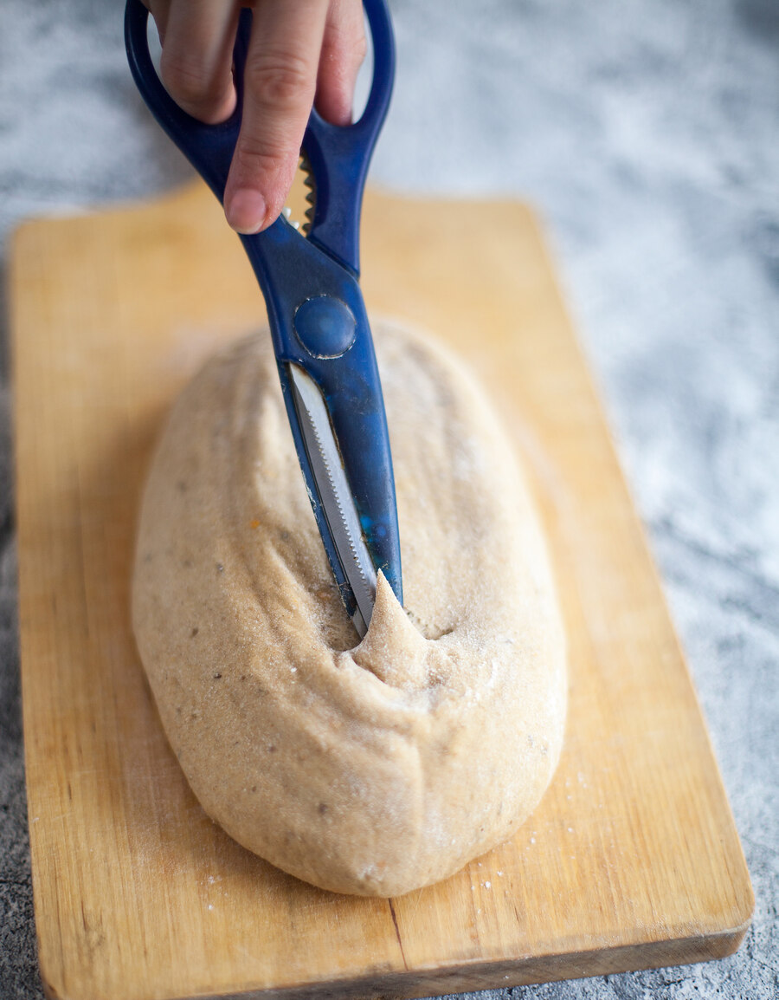

Автор мини-курса — Петрова Наталья, постоянный автор «ПРАкукинга», увлекается выпечкой хлеба уже более 15 лет (кстати, ровно столько лет закваске, которая до сих пор живет), несколько лет вела колонку, посвященную хлебу, в гастрономическом журнале «ХлебСоль».
Этот курс предназначен для тех, кто хочет печь простой вкусный хлеб дома, но не имеет возможности или не хочет углубляться в теорию. Поэтому в мини-курсе мы не будем подробно останавливаться на теоретических моментах хлебопечения, расскажем только базовые правила, без знания которых трудно понять, на каком этапе что пошло не так. Хотя честно признаемся: все эти рецепты прощают ошибки новичкам. Даже если получится неидеально, всё равно на выходе у вас будет вкусный домашний хлеб. При условии, конечно, что вы использовали правильные и качественные ингредиенты.
Рецепты в этом конспекте разрабатывались для современной бытовой электрической духовки. Если её у вас нет, можно использовать хлебопечку, но подбирать режим вам придется самим, так как моделей очень много. Было время, когда и я пекла в хлебопечке, но со временем поняла, насколько скучный получается в ней хлеб — и форма однообразная, и аромат другой. Сейчас хлебопечку использую крайне редко, только когда понимаю, что времени совсем нет. И лишь один вид «дежурного» хлеба. А в основном она у меня работает как тестомес. Хлебопечка очень хорошо умеет замешивать пшеничное тесто. Поэтому, если у вас нет миксера, она станет отличным помощником в этом деле. Одни модели позволяют выбрать режим замеса дрожжевого теста с расстойкой, после которого можно сразу заняться формовкой, а другие — только замес (читайте инструкцию).
Что касается духовки, нужно не забывать, что они тоже бывают разные (могут работать на газу и на электричестве) и, соответственно, дают разный результат. Если у вас газовая, первое время придется понаблюдать, скорее всего, потребуется коррекция температурного режима. Конечно, от духовки зависит многое, и если она по каким-то причинам работает неправильно, хорошего результата не достичь. Убедитесь, что ваша духовка способна поддерживать высокую температуру на одном уровне. У меня был опыт, когда духовка в процессе снижала температуру. Также я сталкивалась с ситуацией, когда духовка вообще не могла набрать даже 230 °С (446 °F). Всегда разогревайте духовку заранее. Моя набирает температуру достаточно быстро и сигнализирует, когда это происходит. Если такой функции у вас нет, пользуйтесь термометрами. Помните, что если вы печете на камне, ему потребуется дополнительное время, так как набранная температура в духовке не означает, что и камень успел прогреться до нужного уровня. То же самое касается чугунной кастрюли. В процессе выпекания, если необходимо перевернуть буханку, старайтесь долго не держать дверцу открытой. Это важно! В любом случае, все духовки разные, и к ним необходимо приспособиться, чтобы получить идеальный результат.
Если у вас нет ни духовки, ни хлебопечки, единственный вариант — сковородка. Конечно, это хлеб совсем другого рода, без пористого мякиша и хрустящей корочки, но тоже свой, свежий, с пылу с жару и с проверенным составом! Посмотрите в магазине на состав тортилий. Зачем там все эти ингредиенты? Чтобы хлеб месяцами не плесневел ни при каких условиях! В нашем конспекте вы найдете два рецепта лепешек, которые выпекаются на сковородке, — дрожжевые лепешки наан и бездрожжевые тортильи.
Вообще, очень полезный и нужный аксессуар, если вы хотите научиться печь настоящий хлеб с идеальным мякишем и тонкой хрустящей корочкой. Но существует немалое количество рецептов хлеба, где можно обойтись и без него. Без камня выпекается всё, что печется в форме.
Полезно иметь хотя бы ручной миксер, он поможет объединить ингредиенты на начальном этапе, хотя некоторые виды теста с его помощью возможно вымесить полностью (для ржаного хлеба и бездрожжевых лепешек, например). Однако помните, что не все ручные миксеры могут справиться с хлебным тестом. Можно вымесить тесто и руками, с нуля, но это более длительный процесс, времени понадобится в два раза больше, придется работать с липким тестом (не всем это нравится) и неоднократно применять технику растягивания и складывания в процессе замеса. Честно говоря, я эту работу люблю доверять машине.
Начав активно печь хлеб дома, я поняла, что планетарный миксер — не роскошь, а необходимость. Ручной замес — процесс более длительный и утомительный. А от качественного замеса, поверьте, очень сильно зависит результат: и то, как будет выглядеть хлеб в итоге, и то, какими окажутся мякиш и корочка, и то, как хлеб будет храниться. В первую очередь это касается, конечно, дрожжевого пшеничного хлеба. К тому же, пока миксер тщательно и кропотливо вымешивает тесто, вы успеваете много всего: отмерить ингредиенты для следующего этапа, подготовить формы и даже выпить кофе. Конечно, наличие миксера вовсе не исключает работу руками. Любое тесто «любит» тепло рук, вдохновение, заботу, требует вашего участия. Но всю самую грязную и тяжелую работу миксер берет на себя. Вот в чем главное его преимущество. Конечно, есть такие увлеченные ремесленники, которые месят исключительно руками… Но тем, кому есть чем заняться кроме хлеба, стационарный миксер просто необходим. К тому же планетарный миксер — это не только про тесто, но и про множество других полезных гаджетов-насадок.
Для вымешивания хлеба с помощью миксера используется насадка в виде крюка (или двух крюков, если у вас ручной миксер).
Весы при приготовлении хлеба категорически необходимы. Стоят они недорого (приличного качества в Германии всего 10–15 евро), а точность отмеривания — гарантия хорошего результата. Кстати, весы на кухне пригодятся и не только для выпечки хлеба, так что это разумная инвестиция. В случае же, когда вы работаете с мукой, отмеривать её следует только с помощью весов, потому что при пользовании мерными стаканами и ложками результат может сильно варьироваться (у муки разная рыхлость и влажность), и хлеб просто не получится.
В некоторых рецептах мы указываем небольшие объемы в ложках. Но помните, это должны быть именно мерные ложки, не используйте обычные ложки, из сервировочных наборов, потому что они все разные.
Рекомендую все ингредиенты взвешивать по отдельности и лишь затем добавлять в миску для смешивания.
Полезно иметь скребки — гибкий округлый для вынимания теста из миски (это намного удобнее, чем лопаткой) и плотный (пластиковый или металлический, у меня оба). Бывают ещё большие скребки, с их помощью можно даже переносить батоны. Впрочем, первых двух вполне достаточно. Опять же, можно обойтись без них и довольствоваться силиконовыми лопатками. Но со скребками намного удобнее.
Скалка поможет раскатать тесто в тонкую лепешку.
Им очень удобно увлажнять тесто, которое кажется плотноватым, сбрызгивать сформованное тесто, которое требует обсыпки. А ещё он может помочь в ситуации, если вдруг к хлебу прилипла бумага для выпечки. Сбрызните, оставьте на некоторое время, и бумагу будет проще снять.
Формы бывают самые разные, и вопрос, какие лучше, сложный. Если вы не собираетесь углубляться в тему хлеба и печь постоянно, нет смысла покупать что-то дорогое и специализированное. Я использую специальные алюминиевые хлебные формы — они долговечные и придают хлебу узнаваемую форму «кирпичика». Но и форма для кекса вполне подойдет. Главное — не силикон, он не годится для выпечки хлеба, так как не дает нужного нагрева, хлеб получается бледным, и аромат совсем другой. Лучше если форма будет не слишком большая, например, 21 или 25–26 см по длинной стороне. Хлеб в более длинных емкостях получится либо слишком большим (придется увеличить объем изделия), либо плоским и некрасивым.
Я не просеиваю муку для дрожжевого хлеба. В этом нет необходимости, разве что убедиться, что в муке нет жучков или мелких камешков. Но лучше выбрать качественную муку. Цельнозерновую муку и вовсе не просеивают. Сито я использую для того, чтобы присыпать мукой рабочую поверхность и, при необходимости, само тесто.
Если мука хорошего качества, в ней не должно быть ничего лишнего, что нужно просеивать. А подозрительную муку, в которой присутствуют подозрительные частички, черные точки, или которая сильно комкуется, лучше не использовать — скорее всего, она неправильно хранилась либо на производстве были нарушены санитарные нормы. Такая мука может не только сказаться на текстуре теста, но и навредить здоровью.
В последнее время я стараюсь минимизировать использование пластика, поэтому от пищевой пленки отказалась практически совсем. Миски накрываю влажным полотенцем или убираю в пакет с ручками, второй способ, кстати, очень удобен — пакет можно надуть, как шар, и хорошо поднявшееся тесто не прилипнет (что часто случается, если накрывать его пищевой пленкой). А ещё я использую шапочки для душа на резиночке из отелей.
Полезно иметь, но если их нет — не беда. Просто выстелите миску льняным полотенцем и хорошенько присыпьте мукой. Многие виды хлеба по нашему конспекту не требуют таких специальных корзин, так как пекутся либо в форме, либо как отдельные булочки или лепешки.
Любой хлеб с корочкой трудно нарезать ножом с обычным плоским лезвием, не смяв батон. Поэтому специальный хлебный нож с зазубренным лезвием — не роскошь, а необходимость. Или вы можете использовать любой универсальный нож с мелкими зубчиками (например, нож для стейка). Им же можно делать насечки и на заготовке из теста. Главное, убедиться, что поверхность не влажная, иначе зубчики будут цепляться за тесто. Надрезы также удобно делать острой бритвой.
Широкая лопатка, разделочная доска или лист фанеры — всё это пригодится для переноса хлеба в духовку.
Это самый важный ингредиент в хлебе. От её качества зависит не только его внешний вид, но и вкус. Поэтому важно попробовать муку разных производителей, выбрать лучшую и стараться покупать только её.
Пшеничная мука бывает пяти сортов: крупчатка, высшего, первого, второго и обойная (то же, что цельнозерновая). Зерно состоит из трёх частей: оболочки (отруби), эндосперма и зародыша. В эндосперме, основной части зерна, содержатся практически весь белок и крахмал и минимум жиров, большая часть жиров — в зародыше (где зарождается росток). Цельнозерновая (обойная) мука вырабатывается целиком из зерна, в ней самое большое количество частиц оболочек зерна и жира, из-за этого у неё самый короткий срок хранения. Обращайте на это внимание и не закупайте такую муку впрок. То же самое касается отрубей и зародышей — это наиболее полезные части зерна, но они же и быстрее портятся. Белая пшеничная мука (высшего сорта) вырабатывается только из центральной части зерна (эндосперма), поэтому в ней высокое содержание белка, минимум жира и самый долгий срок хранения. В зависимости от содержания белка, мука может быть сильной (много белка), а может быть слабой. В России с высоким содержанием белка (более 12) выпускается мука бренда «Макфа» и шугуровская. Также попадается алтайская мука, её можно найти в интернет-магазинах.
Белая мука теряет большую часть полезных веществ в процессе обработки. К тому же в массе своей белая пшеничная мука ещё и отбеливается искусственным образом для ускорения процесса. Поэтому, покупая органическую муку того же типа, будьте готовы к тому, что она может вести себя в тесте немного иначе. Возможно, потребуется небольшая коррекция влажных ингредиентов в составе. Для кондитерских изделий, в которые добавляется разрыхлитель, лучше использовать муку с низким содержанием белка (высокое его содержание препятствует действию разрыхлителя). В нашем конспекте мы даем рецепт тортилий на разрыхлителе, в котором не следует использовать муку с высоким содержанием белка, иначе лепешки могут получиться тугими и «резиновыми».
В пшеничной муке содержатся два основных белка — глиадин и глютенин. Эти белки нерастворимы в воде, однако, соединяясь с водой, они впитывают её и набухают, образуя клейковину. Глиадин отвечает за растяжимость и эластичность теста. Клейковина играет очень важную роль в выпечке дрожжевого хлеба. Чем сильнее мука, тем больше воды она способна принять — такая мука лучше подходит для хлеба и сдобы. Чем слабее мука, тем хуже она принимает воду, тесто получается жиже. Такая мука подойдет для кондитерских изделий, блинов, тонких лепешек. Если мы решили печь бисквит и выбрали муку с большим количеством клейковины, то на выходе получим «резиновую подошву».
Пшеничная мука бывает грубого помола, тонкого и экстратонкого. Обращайте на это внимание, так как помол тоже сказывается на текстуре теста. В России обычная универсальная (общего назначения) пшеничная мука и мука высшего сорта — как правило, тонкого помола, экстратонкий и грубый помол, как правило, указываются отдельно. Но в отношении цельнозерновой муки это не всегда так. На упаковках часто помол не указан, в то же время мука может отличаться. Если вам кажется, что тесто получилось плотным, плохо подходит, можно немного увеличить объем жидкости. Более влажное тесто всегда быстрее поднимается.
Обозначения пшеничной муки в некоторых странах Европы (Германия/Франция): 550/T55 — высший сорт; 812/T65, T80 — первый сорт; 1050/T110 — второй сорт; 1600/T150 — обойная. В Италии для дрожжевой выпечки используется мука 0 и 00 (очень сильная пшеничная мука тонкого помола), а также integrale (используется не только эндосперм).
Бывает обойной (цельнозерновой), обдирной и сеяной. Первые два сорта содержат оболочку зерна и имеют чуть более крупный помол, чем сеяная. Сеяная вырабатывается из центральной части зерна. В нашем конспекте используются обдирная и цельнозерновая, но вы можете смешивать разные виды. Однако учтите, что потребуется коррекция количества жидкости. Если у вас совсем нет опыта в выпечке, мы бы рекомендовали сначала попробовать использовать только указанный вид муки, а экспериментировать уже после.
Как и пшеничная мука, ржаная бывает грубого и тонкого помола. Обозначения в Германии/Франции: 815/T70 — сеяная (для светлых ржаных и заварных видов хлеба); 1150/T130 — обдирная; 1600, 1740/1800/T170 — ржаная мука грубого помола из цельного зерна (цельнозерновая, для темного ржаного хлеба).
Качество воды тоже имеет большое значение. Используйте питьевую или фильтрованную воду. В ней не должно быть хлора. Вода при замесе должна быть комнатной температуры.
Дрожжи используют для разрыхления и подъема теста. Температурный диапазон действия дрожжей — от +4 до +40 °С (39–104 °F). Поэтому очень важно не перегревать жидкие ингредиенты, которые добавляются в тесто в теплом виде. Если их температура выше, стоит подождать и остудить до указанного максимума. Повышенная температура может снизить или свести на нет активность дрожжей. Пониженная температура затормаживает действие дрожжей.
Дрожжи бывают прессованные, сухие инстантные (быстродействующие, быстрорастворимые) и сухие активные. Профессиональные пекари любят прессованные дрожжи. Я предпочитаю работать с быстродействующими, так как их удобно хранить и не нужно активировать. Они хорошо хранятся и всегда есть в запасе.
Если вы хотите использовать прессованные дрожжи вместо сухих, нужно сделать перерасчет их количества, умножив вес сухих на 3. Прессованные дрожжи перед использованием растворяют в воде, предпочтительно прохладной. Прессованные дрожжи в брикете хранятся в холодильнике при +5 °С (41 °F) до 30 дней с момента выпуска. Если не планируете использовать их целиком в течение этого времени, лучше заморозить — так они будут храниться более года без потери свойств. Но очень важно их правильно разморозить! Для этого переложите дрожжи в холодильную камеру примерно на сутки, чтобы не было резкого перепада температур и чтобы оттаивание шло медленно. Если разморозить дрожжи в тепле, высока вероятность, что они погибнут — при этом масса станет жидкой, с неприятным запахом.
Быстрорастворимые сухие дрожжи выпускаются в виде очень мелкой бежевой крупки. Такие дрожжи могут долго храниться в закрытой упаковке при комнатной температуре, но после вскрытия упаковку лучше хранить в холодильнике. При использовании такие дрожжи нужно смешать с мукой; воду для замеса следует брать комнатной температуры (20–25 °С, 68–77 °F). Активные сухие дрожжи выпускают в виде крупной бежевой крупки. Перед использованием их необходимо активировать в очень теплой воде (30–35 °С, 86–95 °F), как правило с добавлением сахара и муки.
Качество дрожжей тоже бывает разным. Одни быстрорастворимые дрожжи могут оказаться чуть сильнее других, и тесто будет подниматься активнее или наоборот, медленнее. Поэтому и здесь лучше остановиться на каком-то определенном производителе, тогда и результат будет предсказуемым.
И ещё хотелось бы подчеркнуть, какими бы дрожжами вы ни пользовались, они должны быть свежими! Проверьте срок годности перед выпечкой.
Хлеб может быть приготовлен опарным и безопарным способом. Опара — предварительная заготовка из муки, воды и дрожжей (или закваски), которая добавляется в основное тесто. В нашем конспекте нет хлеба на опаре, так как этот метод требует дополнительного времени, поэтому мы не будем останавливаться на нём подробно. При безопарном способе все ингредиенты смешиваются одновременно.
При безопарном способе приготовление пшеничного теста состоит из следующих операций: замес теста; первая расстойка (брожение) и обминка; разделка и формовка; вторая расстойка; выпечка.
Чем мешать, уже говорилось выше. Если у вас есть миксер, проблем возникнуть не должно. Главное, помнить: чем тщательнее вы вымешали пшеничное дрожжевое тесто, тем лучше для хлеба. В нашем конспекте нет таких рецептов хлеба, где тесто нужно месить максимально тщательно, до так называемого «глютенового окошка» (это когда тесто становится настолько эластичным, клейковина в нем настолько развита, что, если его растянуть, получится тонкая пленочка, как если бы вы растянули жевательную резинку). Но до умеренно развитой клейковины всё же пшеничное тесто вымесить стоит. Потому что развитая клейковина дает отличный мякиш и тонкую хрустящую корочку. Как понять, что вы вымесили тесто достаточно? Тесто с умеренно развитой клейковиной становится менее липким, начинает отходить от стенок чаши миксера и меньше прилипать к рукам, а если и прилипает, то почти не остается руках.
Очень липкое тесто со слабо развитой клейковиной липнет настолько, что его приходится счищать с рук. Вот основная разница, на эти визуальные признаки и стоит ориентироваться. Возможно, сначала будет не очень понятно, но после нескольких буханок вы постепенно начнете чувствовать тесто. Кстати, об очищении… Как очистить руки от теста? Ни в коем случае не смывайте водой, потому что тесто от воды станет клейким и липучим. Самый простой способ счистить его с рук — с помощью муки: взять в руки небольшое количество и растереть, тесто станет суше и постепенно сойдет с рук.
Обычно планетарные (стационарные, не ручные) миксеры хорошо справляются с замесом, но иногда липкому тесту нужно немного помочь в процессе. Пока оно ещё липкое, оно может «зависать» на стенках чаши. Тогда в процессе несколько раз выключите миксер, лопаткой соскребите тесто к центру, заодно и проверив, вся ли мука со дна вымесилась (бывает, что и остается, не все миксеры идеальны), и снова включите мотор. Увеличьте скорость почти до максимума и помесите какое-то время — обычно это помогает. По мере развития клейковины тесто будет становиться более эластичным, упругим и начнет собираться в шар. Обычно на замес дрожжевого пшеничного теста с умеренно развитой клейковиной в планетарном миксере уходит 6–8 минут (зависит от качества муки и количества белка в ней).
Ржаное тесто удобнее всего вымешивать, добавляя муку частями. Принцип такой: сначала вымешивается жидкое тесто, затем в него добавляется вся оставшаяся мука. Понадобится три емкости: для муки, большая для замешивания и миска для расстойки (они должны быть в 3 раза больше теста).
Очень важно, чтобы все ингредиенты были комнатной температуры, не холодные. Если вы достали сыворотку из холодильника, дайте ей согреться или прогрейте в микроволновой печи, но совсем слегка.
Отмерить необходимое количество муки в отдельную миску. Подготовить чистую миску для расстойки, смазать её растительным маслом. Всыпать половину муки в чашу для вымешивания и смешать с дрожжами, добавить соль, воду и другие ингредиенты, начать вымешивать венчиком (или вилкой), постепенно захватывая всё больше муки, и так до тех пор, пока не получится влажное тесто. Продолжить вымешивание, подсыпая остальную муку из миски, когда тесто станет плотнее, венчик заменить силиконовой или деревянной лопаткой. Чтобы снять тесто с лопатки, можно воспользоваться скребком или другой лопаткой. Добавив оставшуюся муку, вымесить до однородности. Переложить тесто в смазанную маслом миску для расстойки с помощью гибкого скребка или силиконовой лопатки. Накрыть пакетом так, чтобы внутри образовался воздух и поверхность пакета не прилипла к тесту.
Выложите тесто на рабочую поверхность, слегка разомните его в квадрат, возьмите двумя руками за дальний край (при необходимости помогайте скребком первое время), оттяните слегка наверх, затем сложите внутрь таким образом, чтобы край теста, который вы держали руками, оказался в центре. Теперь возьмите противоположный край теста, тот, что ближе к вам, и так же оттяните чуть вверх и сложите внутрь, но уже так, чтобы этот край теста был слегка внахлест поверх предыдущего сложенного. Дальше тесто нужно повернуть на 45 градусов, чтобы таким же образом проработать боковые стороны вашего «квадрата». Растягивайте и складывайте тесто так до тех пор, пока оно не станет более упругим и эластичным.
Присыпание стола мукой: нужно помнить, что с этим стоит быть аккуратнее, чтобы не внести в пшеничное тесто муки больше, чем надо. Если вы месите руками, это особенно важно, так как всё время хочется добавить муки, чтобы тесто перестало липнуть. Я рекомендую присыпать мукой стол только после того, как оно вымесится и почти перестанет липнуть, и лишь немного, чтобы вы смогли придать тесту форму шара и затем переложить его в миску. Если тесто замешивается в планетарном миксере, можно сразу переложить его в смазанную маслом миску, используя скребок.
С ржаным тестом всё немного иначе. Если оно влажное, мукой стоит присыпать стол достаточно хорошо, так как ржаное тесто не становится упругим и эластичным, оставаясь кашеобразным. Его просто невозможно будет сформовать без достаточного количества муки, оно всё прилипнет. Но и перебор с мукой — тоже плохо. Я посыпаю примерно 1–2 столовыми ложками. Складывайте тесто быстро, чтобы оно не успело впитать муку и прилипнуть. Ничего страшного, если ржаное тесто в процессе перекладывания в емкость для выпечки потеряет форму, его можно скорректировать по краям и огладить влажной рукой. В процессе брожения оно выровняется и вберет в себя излишки муки.
Первая расстойка — очень важный этап. В процессе брожения тесто набирает объем, уплотняется и в то же время разрыхляется. Плохо расстоявшееся тесто может повлиять на качество мякиша и корки. Но перебродившее тесто будет вести себя иначе при второй расстойке и иметь кислый привкус и рыхлую текстуру в испеченном виде. Поэтому, если выбирать между тем и другим, лучше слегка недодержать тесто на расстойке, чем передержать.
Как понять, что тесто выбродило и его пора формовать? Подъем на максимуме, аромат нежный. В рецептах я часто указываю не только время, но и объем, чтобы вы могли ориентироваться по визуальным признакам, так как на брожение влияет множество факторов. Даже по одному и тому же рецепту с разной мукой бывает на выходе чуть другая влажность у теста, другая температура в комнате и т. п. Тесто подходит по-разному. Поэтому ориентируйтесь на объем, а время указывается для того, чтобы вы могли примерно понять, сколько его понадобится.
Если вы вымешивали пшеничное тесто руками, обязательно сделайте хотя бы один раз складывание-растягивание примерно в середине расстойки. Для планетарного миксера это не так важно.
Иногда бывает так, что тесто бродит чуть дольше, чем планировали, и вы понимаете, что не успеете выпечь хлеб. Накройте тесто пакетом, уберите в холодильник и продолжите работу на следующий день. Поверьте, тесту только на пользу (если только оно у вас ещё не на пике). Перед формовкой дайте ему согреться до комнатной температуры в течение 30–40 минут.
По сути, вы применяете метод складывания, но уже без сильного растягивания. Для формовки шара тесто мы слегка расплющиваем в квадрат, затем складываем дальнюю от себя сторону внутрь, к центру, затем ближнюю внутрь, слегка внахлест. Если остановиться на этом этапе, у нас получается длинный батон. Если то же самое повторить с боковыми сторонами, получим круглую буханку. После складываний запечатываем шов: при необходимости посыпаем стол небольшим количеством муки, переворачиваем тесто швом вниз и немного катаем, чтобы шов запечатался.
Как и в ситуации с первой расстойкой, здесь тесту лучше немного недостоять, чем наоборот. С опытом вы научитесь чувствовать, когда тесто идеально расстоялось и его пора печь. У теста, которое недостаточно расстоялось перед выпечкой, могут появиться трещины. Обычно надрезы решают эту проблему, но если тесто расстаивалось совсем мало, трещины и разрывы могут появиться, по бокам и внизу, даже при наличии надрезов. Просто учтите это на будущее и увеличьте время второй расстойки. Если и это не помогает, проверьте свежесть дрожжей.
Как определить, готов ли хлеб для посадки в печь, прошел ли он полную расстойку? Нужно слегка надавить пальцем на заготовку: при полной расстойке ямка выправляется медленно и неохотно, при неполной — быстро и полностью.
Я очень люблю длительную холодную расстойку. Для этого тесту нужно постоять только половину указанного времени при комнатной температуре, затем вам следует накрыть его пакетом и убрать в холодильник на ночь или на сутки. Перед выпеканием дать ему согреться в течение 30–60 минут (зависит от окружающей температуры).
Если в доме прохладно, менее 23–24 °С (73–75 °F), хлеб может подниматься дольше указанного времени, тогда рекомендую пользоваться специальным режимом духовки (расстойка теста) или включить ее на 30 °С (86 °F), если специального режима нет.
Важный момент: их делают на изделиях, которые расстаиваются немного меньше по времени. Они несут не только эстетическую, но и практическую функцию: делая надрезы в определенном месте, мы даем возможность газу выйти там, где нужно. Если надрезов не сделать, хлеб некрасиво растрескается под давлением газа.
Обычно надрезы делают острым ножом с зазубренным лезвием (хлебным или для стейка) или острой бритвой, а наносят их так: под острым углом, надсекая поверхность (не давя на тесто), на глубину до 0,7–1,0 см. Нож или лезвие, которым надсекается хлеб, нужно вести не прямо перпендикулярно поверхности, а под углом, то есть лезвие должно уходить не прямо вниз, а слегка вбок, как будто вы делаете карман.
На формовом хлебе надрезов обычно не делают, но для красоты можно также поэкспериментировать.
Чтобы хлеб был красивым, воздушным и с хрустящей тонкой корочкой, нужно создать определенные условия в процессе выпекания, а именно — повысить влажность в духовке. Это можно делать разными способами. Например, поставить на нижний уровень ещё один противень (или плоскую огнеупорную емкость) и сразу (!) после посадки хлеба в духовку влить подготовленную заранее холодную воду (полстакана) или бросить горсть кубиков льда. Или сбрызнуть стенки духовки из пульверизатора. Когда я пеку круглый хлеб на камне, накрываю его большой металлической миской — так тоже создается влажный режим, но без добавления воды, за счет влаги в самом тесте. Через 15 минут миску нужно убрать и допечь хлеб без неё. Ещё один способ создания «пара» без использования дополнительной воды — глубокая чугунная посуда с крышкой. Посуду нужно, как и камень, прогреть, затем перенести в неё хлеб и накрыть крышкой в первые 15 минут выпекания.
Всё это не касается хлеба в форме, а также плоских лепешек. Их печем без пара.
Если вы печете хлеб на противне или в форме, здесь всё просто. Где тесто второй раз расстоялось, там и печем. Если вам нужно перенести хлеб на камень, можно сделать это с помощью разделочной доски (с ручкой) подходящего размера либо листа фанеры. Есть ещё один вариант — перевернутый небольшой противень.
Печь дрожжевой хлеб лучше в режиме конвекции (если она есть), или с обдувом. Время и температура выпечки зависят от того, насколько заполнена камера, от веса заготовок, от типа духовки и режима выпечки. Если по рецепту формуются два хлеба, а вы решили сделать один, время выпечки нужно будет увеличить примерно в полтора раза и наоборот, если была одна буханка, а вы решили испечь две маленькие, время нужно уменьшить.
Как понять, что хлеб готов? Во-первых, по золотистой корочке. Во-вторых, он должен стать легче — особенно это заметно на белом пшеничном тесте, — это происходит потому, что в процессе выпекания хлеб теряет часть влаги и поднимается. Если хлеб выпекался без формы, на противне или камне, возьмите его перчатками или полотенцем и слегка постучите по бокам тупой стороной ножа. Если звук звонкий — хлеб готов, если глухой, его нужно ещё немного допечь.
Для остывания хлеб лучше всего поместить на решетку или тарелку с перфорированной поверхностью (чтобы не отсырело дно). Пока хлеб горячий, он ещё продолжает готовиться — созревает, доходит. В течение остывания формируются окончательные текстура и вкус хлеба, меняются мякиш и корочка. Поэтому остывание — такой же важный этап, как и все остальные. Если им пренебречь, мякиш станет мокрым и клейким, нож будет не рассекать хлеб, а сминать.
Чем чаще будете печь, тем больше будет опыта и понимания. Как и в любом деле, важно уметь обращаться с инвентарем и понимать основные технологические моменты. Четко следуйте рецептам. И обращайте внимание на нюансы.
| Проблема | Причины | Пути решения |
|---|---|---|
| Не поднимается или плохо поднимается тесто | 1. Несвежие либо слабые дрожжи. 2. Холодная вода. 3. Заражённая мука. | 1. В большинстве случаев проблема в дрожжах. Проверьте срок годности дрожжей, если они свежие, обратите внимание на дозировку. 2. Убедитесь, что вода была комнатной температуры. 3. Попробуйте другую муку. |
| Боковые прорывы хлебной корки | 1. Недостаточная расстойка (пшеничный хлеб). 2. Недостаточно хорошо разогрета духовка (ржаной хлеб). | 1. Увеличить время расстойки. 2. Хлеб преимущественно из ржаной муки всегда сначала пекут при высокой температуре, затем её снижают. |
| Бледная корочка | 1. Недостаточная расстойка. 2. Недостаточный разогрев духовки. | 1. Увеличьте время расстойки. 2. Убедитесь, что духовка прогрелась до нужной температуры. |
| Неровная, бугристая поверхность корочки | Перерасстойка. | Уменьшите время расстойки. |
| Плоская поверхность у хлеба, нет шапочки | Перерасстойка. | Уменьшите время расстойки. |
| Неравномерная пористость мякиша | Перерасстойка. | Уменьшите время расстойки. |